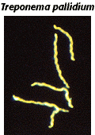
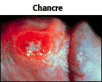

Sexually Transmitted Diseases Problem Set
Problem 6: STD Responsible for Chancre
Help to answer the question| What STD is responsible for the appearance of a chancre, a small, painless, reddish-brown sore on the mouth or on the sex organs. |
Tutorial
Syphilis|
 Used with permission of © Dr. G. Songer |
Syphilis, a treatable bacterial disease, is caused by Treponema pallidum, a spirochete bacterium. The sexually transmitted disease is transmitted by direct contact with an open sore. It can also be transmitted from an infected mother to her baby any time during pregnancy or at birth. To the child, it can cause heart disease, brain damage, blindness or death. |
|
Stage 1: About three weeks after being infected, one or more small, painless, reddish-brown blisters appear on the mouth or on the sex organs. This stage of syphilis is highly contagious. The sores will go away after 1 to 5 weeks, but the disease will not. |
 Used with permission of © Dr. Norm Levine |
|
Stage 2: This stage is characterized by a rash that may cover the entire body. It can also be accompanied by flu-like feelings. These symptoms may happen weeks or months after healing of the sores of stage 1. This stage is also very contagious. Stage 3: If not treated, the bacteria may cause lesions to internal organs and tissues, this stage has no symptoms at all and may last for years. At that stage the infected person is not contagious. Stage 4: It is at this stage that the damage caused in stage 3 is evident. The infected person may experience heart disease, nerve damage, tissue death (necrosis), or mental defect. |
|


University of Arizona
Tuesday, December 2, 1997
Contact the Development Team
http://biology.arizona.edu
All contents copyright © 1997. All rights reserved.